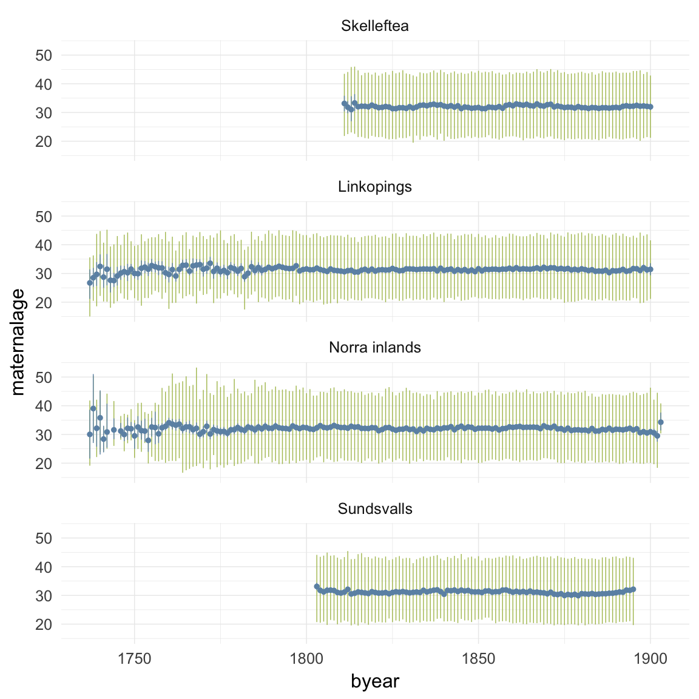
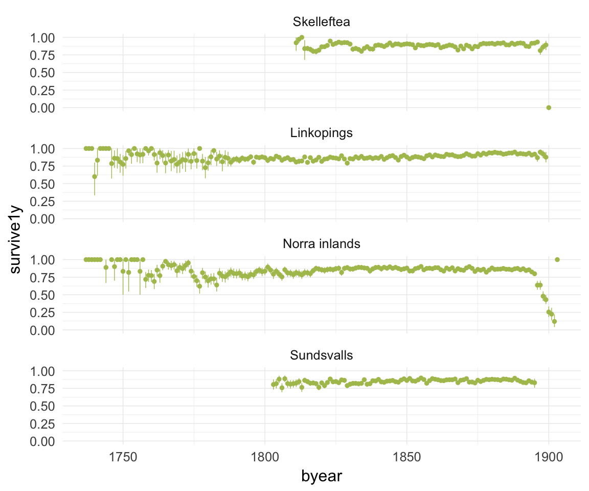
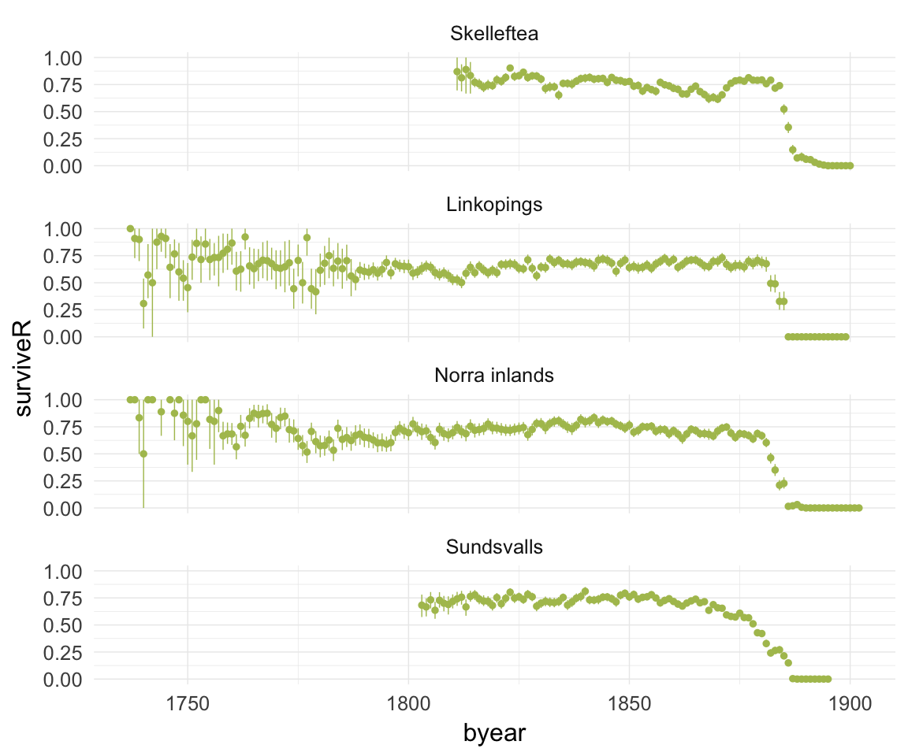
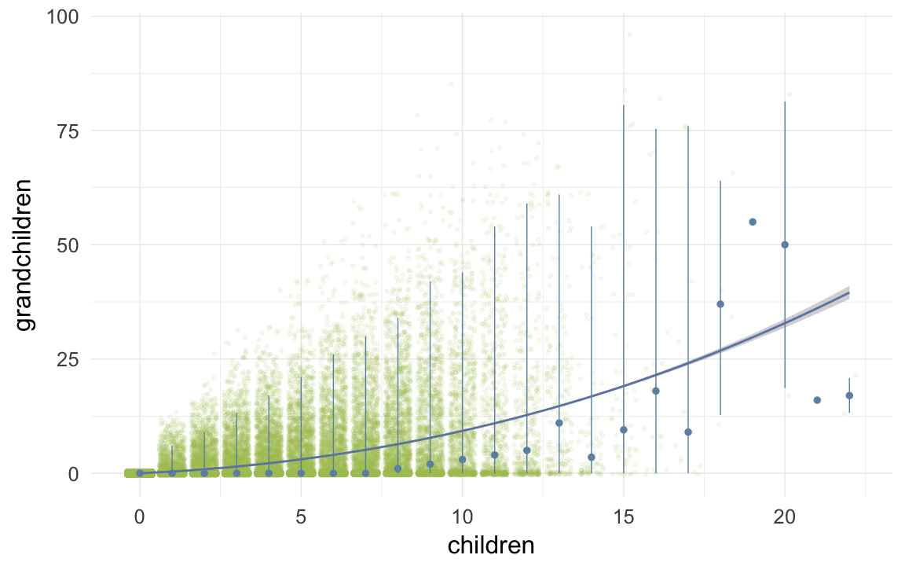
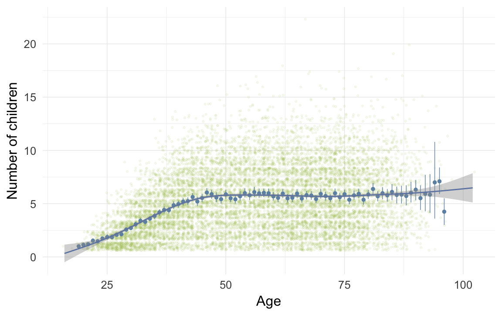

Demographic data base Sweden
Loading details
source("0__helpers.R")
opts_chunk$set(render = pander_handler, cache=F,tidy=FALSE,dev='png',fig.width=12,fig.height=7.5,warning = F, message = F)
load("ddb.rdata")
demo_trends_skelleftea = aggDemoTrends(ddb[region=="Skelleftea",])
demo_trends_norra = aggDemoTrends(ddb[region=="Norra inlands",])
demo_trends_sundsvall = aggDemoTrends(ddb[region=="Sundsvalls",])
demo_trends_linkoping = aggDemoTrends(ddb[region=="Linkopings",])
desc_theme = theme_minimal(base_size = 24)
update_geom_defaults("bar", list(fill = "#6c92b2", alpha = 1/2))
mymin = theme_minimal() +theme(panel.grid.major.y =element_blank(),panel.grid.major.x = element_line(colour="#eeeeee"))
ddb[, paternalage := 10 * paternalage]
ddb[, maternalage := 10 * maternalage]
ddb[, age := 10 * age]
ddb[, age_at_1st_child := 10 * age_at_1st_child]
ddb[, age_at_last_child := 10 * age_at_last_child]
ddb.1[, paternalage := 10 * paternalage]
ddb.1[, maternalage := 10 * maternalage]
ddb.1[, age := 10 * age]
ddb.1[, age_at_1st_child := 10 * age_at_1st_child]
ddb.1[, age_at_last_child := 10 * age_at_last_child]Variable descriptives
Whole population (N = 271130)
descriptives = psych::describeBy(ddb[, list(
paternalage, maternalage, birthorder, nr.siblings, age, children, grandchildren, byear, byear.Father, age_at_1st_child, age_at_last_child
)],group = ddb$region)Linköping
round(data.frame(descriptives$`Linkopings`)[,2:12],2)| n | mean | sd | median | trimmed | mad | min | max | range | skew | kurtosis | |
|---|---|---|---|---|---|---|---|---|---|---|---|
| paternalage | 63592 | 34.24 | 7.79 | 33.17 | 33.64 | 7.58 | 10.1 | 79.79 | 69.69 | 0.82 | 1.01 |
| maternalage | 63686 | 31.35 | 6.17 | 30.97 | 31.2 | 6.87 | 10.29 | 59.44 | 49.14 | 0.19 | -0.6 |
| birthorder | 64028 | 2.94 | 2.05 | 2 | 2.62 | 1.48 | 1 | 17 | 16 | 1.31 | 1.68 |
| nr.siblings | 64028 | 3.87 | 2.63 | 3 | 3.68 | 2.97 | 0 | 16 | 16 | 0.62 | -0.04 |
| age | 16459 | 11.92 | 21.16 | 1.45 | 6.5 | 2.15 | 0 | 95.76 | 95.76 | 2.01 | 2.9 |
| children | 66211 | 0.36 | 1.41 | 0 | 0 | 0 | 0 | 17 | 17 | 4.74 | 24.75 |
| grandchildren | 66211 | 0.14 | 1.22 | 0 | 0 | 0 | 0 | 37 | 37 | 13.06 | 221.8 |
| byear | 66211 | 1846 | 31.87 | 1850 | 1848 | 37.06 | 1737 | 1900 | 163 | -0.43 | -0.53 |
| byear.Father | 63597 | 1812 | 32.94 | 1817 | 1814 | 37.06 | 1668 | 1878 | 210 | -0.44 | -0.41 |
| age_at_1st_child | 5991 | 26.75 | 5.12 | 25.94 | 26.27 | 4.37 | 10.1 | 65.48 | 55.38 | 1.25 | 3.62 |
| age_at_last_child | 5991 | 34.77 | 7.99 | 34.61 | 34.54 | 9.03 | 16.08 | 76.46 | 60.38 | 0.34 | 0 |
describeBin(ddb[region == "Linkopings", list(survive1y, surviveR, ever_married)])| n | mean | sd | |
|---|---|---|---|
| survive1y | 61258 | 0.88 | 0.1 |
| surviveR | 35596 | 0.64 | 0.23 |
| ever_married | 66211 | 0.12 | 0.1 |
pander(xtabs(~ paternal_loss, ddb[region == "Linkopings",]), caption = "Paternal loss at age")| later | [0,1] | (1,5] | (5,10] | (10,15] | (15,20] | (20,25] | (25,30] | (30,35] | (35,40] | (40,45] | unclear |
|---|---|---|---|---|---|---|---|---|---|---|---|
| 2875 | 780 | 1836 | 2448 | 2692 | 2701 | 2746 | 2603 | 2511 | 2108 | 1350 | 41561 |
pander(xtabs(~ maternal_loss, ddb[region == "Linkopings",]), caption = "Maternal loss at age")| later | [0,1] | (1,5] | (5,10] | (10,15] | (15,20] | (20,25] | (25,30] | (30,35] | (35,40] | (40,45] | unclear |
|---|---|---|---|---|---|---|---|---|---|---|---|
| 4633 | 745 | 1463 | 1890 | 1875 | 1910 | 1962 | 2224 | 2463 | 2439 | 1778 | 42829 |
Sundsvall
round(data.frame(descriptives$`Sundsvalls`)[,2:12],2)| n | mean | sd | median | trimmed | mad | min | max | range | skew | kurtosis | |
|---|---|---|---|---|---|---|---|---|---|---|---|
| paternalage | 91598 | 33.71 | 7.23 | 32.77 | 33.21 | 7.12 | 10.48 | 82.06 | 71.58 | 0.75 | 0.85 |
| maternalage | 91602 | 30.9 | 6.2 | 30.47 | 30.73 | 6.82 | 10.21 | 55.66 | 45.45 | 0.23 | -0.59 |
| birthorder | 91724 | 3.05 | 2.1 | 2 | 2.74 | 1.48 | 1 | 16 | 15 | 1.26 | 1.63 |
| nr.siblings | 91724 | 4.1 | 2.63 | 4 | 3.92 | 2.97 | 0 | 15 | 15 | 0.61 | 0.13 |
| age | 25491 | 10.3 | 19.27 | 1 | 5.19 | 1.48 | 0 | 92.35 | 92.35 | 2.19 | 3.82 |
| children | 96447 | 0.5 | 1.59 | 0 | 0.04 | 0 | 0 | 17 | 17 | 3.88 | 16.67 |
| grandchildren | 96447 | 0.26 | 1.76 | 0 | 0 | 0 | 0 | 47 | 47 | 9.85 | 123.7 |
| byear | 96447 | 1867 | 22.04 | 1874 | 1870 | 17.79 | 1803 | 1895 | 92 | -0.97 | 0.02 |
| byear.Father | 91603 | 1833 | 23.16 | 1839 | 1836 | 20.76 | 1735 | 1878 | 143 | -0.9 | 0.1 |
| age_at_1st_child | 12195 | 26.52 | 4.98 | 25.8 | 26.1 | 4.55 | 11.03 | 63.5 | 52.47 | 1.01 | 2 |
| age_at_last_child | 12195 | 34.16 | 7.5 | 34 | 33.97 | 8.5 | 15.04 | 72.68 | 57.65 | 0.31 | -0.09 |
describeBin(ddb[region == "Sundsvalls", list(survive1y, surviveR, ever_married)])| n | mean | sd | |
|---|---|---|---|
| survive1y | 90397 | 0.86 | 0.12 |
| surviveR | 51698 | 0.61 | 0.24 |
| ever_married | 96447 | 0.15 | 0.13 |
pander(xtabs(~ paternal_loss, ddb[region == "Sundsvalls",]), caption = "Paternal loss at age")| later | [0,1] | (1,5] | (5,10] | (10,15] | (15,20] | (20,25] | (25,30] | (30,35] | (35,40] | (40,45] | unclear |
|---|---|---|---|---|---|---|---|---|---|---|---|
| 3752 | 989 | 2336 | 3008 | 3011 | 2924 | 2717 | 2569 | 2337 | 2054 | 1458 | 69292 |
pander(xtabs(~ maternal_loss, ddb[region == "Sundsvalls",]), caption = "Maternal loss at age")| later | [0,1] | (1,5] | (5,10] | (10,15] | (15,20] | (20,25] | (25,30] | (30,35] | (35,40] | (40,45] | unclear |
|---|---|---|---|---|---|---|---|---|---|---|---|
| 5755 | 881 | 1842 | 2236 | 1974 | 1858 | 1893 | 2076 | 2208 | 2340 | 1803 | 71581 |
Norra inländs
round(data.frame(descriptives$`Norra inlands`)[,2:12],2)| n | mean | sd | median | trimmed | mad | min | max | range | skew | kurtosis | |
|---|---|---|---|---|---|---|---|---|---|---|---|
| paternalage | 48765 | 35.73 | 8.19 | 34.72 | 35.15 | 8.12 | 10.55 | 88.91 | 78.37 | 0.77 | 0.99 |
| maternalage | 48680 | 31.98 | 6.66 | 31.67 | 31.84 | 7.44 | 10.76 | 59.89 | 49.14 | 0.18 | -0.61 |
| birthorder | 49433 | 3.73 | 2.56 | 3 | 3.4 | 2.97 | 1 | 19 | 18 | 1.06 | 0.88 |
| nr.siblings | 49433 | 5.47 | 3.07 | 5 | 5.37 | 2.97 | 0 | 18 | 18 | 0.34 | -0.21 |
| age | 19081 | 18.39 | 26.37 | 2.59 | 13.25 | 3.84 | 0 | 101.6 | 101.6 | 1.33 | 0.37 |
| children | 50845 | 1.2 | 2.68 | 0 | 0.47 | 0 | 0 | 22 | 22 | 2.41 | 5.38 |
| grandchildren | 50845 | 1.36 | 5.83 | 0 | 0 | 0 | 0 | 96 | 96 | 6.12 | 46.51 |
| byear | 50845 | 1854 | 35.23 | 1862 | 1857 | 35.58 | 1737 | 1903 | 166 | -0.79 | -0.25 |
| byear.Father | 48778 | 1818 | 35.83 | 1826 | 1822 | 35.58 | 1660 | 1879 | 219 | -0.78 | -0.08 |
| age_at_1st_child | 11479 | 27.39 | 5.46 | 26.53 | 26.91 | 4.94 | 11.13 | 65.28 | 54.15 | 0.99 | 1.76 |
| age_at_last_child | 11479 | 38.04 | 8.2 | 38.76 | 38.04 | 8.23 | 14.95 | 77.88 | 62.93 | 0.1 | 0.18 |
describeBin(ddb[region == "Norra inlands", list(survive1y, surviveR, ever_married)])| n | mean | sd | |
|---|---|---|---|
| survive1y | 47585 | 0.84 | 0.13 |
| surviveR | 35880 | 0.65 | 0.23 |
| ever_married | 50845 | 0.26 | 0.19 |
pander(xtabs(~ paternal_loss, ddb[region == "Norra inlands",]), caption = "Paternal loss at age")| later | [0,1] | (1,5] | (5,10] | (10,15] | (15,20] | (20,25] | (25,30] | (30,35] | (35,40] | (40,45] | unclear |
|---|---|---|---|---|---|---|---|---|---|---|---|
| 4115 | 618 | 1278 | 1646 | 1805 | 2021 | 2163 | 2281 | 2281 | 2202 | 1517 | 28918 |
pander(xtabs(~ maternal_loss, ddb[region == "Norra inlands",]), caption = "Maternal loss at age")| later | [0,1] | (1,5] | (5,10] | (10,15] | (15,20] | (20,25] | (25,30] | (30,35] | (35,40] | (40,45] | unclear |
|---|---|---|---|---|---|---|---|---|---|---|---|
| 6684 | 653 | 1383 | 1559 | 1389 | 1354 | 1397 | 1485 | 1722 | 2063 | 1688 | 29468 |
Skellefteå
round(data.frame(descriptives$`Skelleftea`)[,2:12],2)| n | mean | sd | median | trimmed | mad | min | max | range | skew | kurtosis | |
|---|---|---|---|---|---|---|---|---|---|---|---|
| paternalage | 55975 | 34.72 | 7.39 | 33.85 | 34.26 | 7.54 | 11.3 | 77.23 | 65.93 | 0.63 | 0.37 |
| maternalage | 55974 | 32.01 | 6.3 | 31.76 | 31.91 | 7.1 | 11.49 | 57.2 | 45.72 | 0.13 | -0.71 |
| birthorder | 56013 | 3.77 | 2.51 | 3 | 3.46 | 2.97 | 1 | 21 | 20 | 0.99 | 0.75 |
| nr.siblings | 56013 | 5.53 | 2.9 | 5 | 5.47 | 2.97 | 0 | 20 | 20 | 0.29 | 0.02 |
| age | 17317 | 16 | 22.13 | 3.17 | 11.7 | 4.7 | 0 | 88.17 | 88.17 | 1.34 | 0.54 |
| children | 57627 | 1.02 | 2.42 | 0 | 0.33 | 0 | 0 | 21 | 21 | 2.54 | 5.84 |
| grandchildren | 57627 | 0.57 | 3.22 | 0 | 0 | 0 | 0 | 59 | 59 | 8.06 | 79.73 |
| byear | 57627 | 1864 | 22.95 | 1867 | 1865 | 26.69 | 1811 | 1900 | 89 | -0.44 | -0.94 |
| byear.Father | 55984 | 1829 | 23.97 | 1832 | 1830 | 26.69 | 1742 | 1878 | 136 | -0.41 | -0.74 |
| age_at_1st_child | 11431 | 27.06 | 4.95 | 26.25 | 26.64 | 4.37 | 11.3 | 57.85 | 46.55 | 0.98 | 1.75 |
| age_at_last_child | 11431 | 36.86 | 7.31 | 37.47 | 36.96 | 7.82 | 11.62 | 70.18 | 58.56 | -0.05 | -0.24 |
describeBin(ddb[region == "Skelleftea", list(survive1y, surviveR, ever_married)])| n | mean | sd | |
|---|---|---|---|
| survive1y | 55085 | 0.89 | 0.1 |
| surviveR | 40358 | 0.72 | 0.2 |
| ever_married | 57627 | 0.25 | 0.19 |
pander(xtabs(~ paternal_loss, ddb[region == "Skelleftea",]), caption = "Paternal loss at age")| later | [0,1] | (1,5] | (5,10] | (10,15] | (15,20] | (20,25] | (25,30] | (30,35] | (35,40] | (40,45] | unclear |
|---|---|---|---|---|---|---|---|---|---|---|---|
| 3443 | 581 | 1398 | 2027 | 2151 | 2313 | 2560 | 2617 | 2689 | 2568 | 1702 | 33578 |
pander(xtabs(~ maternal_loss, ddb[region == "Skelleftea",]), caption = "Maternal loss at age")| later | [0,1] | (1,5] | (5,10] | (10,15] | (15,20] | (20,25] | (25,30] | (30,35] | (35,40] | (40,45] | unclear |
|---|---|---|---|---|---|---|---|---|---|---|---|
| 4783 | 724 | 1596 | 1986 | 1832 | 1854 | 2005 | 2127 | 2372 | 2313 | 1709 | 34326 |
included sample (N = 56947)
descriptives = psych::describeBy(ddb.1[, list(
paternalage, maternalage, birthorder, nr.siblings, age, children, grandchildren, byear, byear.Father, age_at_1st_child, age_at_last_child
)],group = ddb.1$region)Linköping
round(data.frame(descriptives$`Linkopings`)[,2:12],2)| n | mean | sd | median | trimmed | mad | min | max | range | skew | kurtosis | |
|---|---|---|---|---|---|---|---|---|---|---|---|
| paternalage | 17226 | 35.59 | 8.38 | 34.5 | 34.97 | 8.16 | 11.17 | 79.79 | 68.62 | 0.75 | 0.68 |
| maternalage | 17192 | 32.27 | 6.19 | 32.1 | 32.22 | 6.97 | 12.27 | 59.44 | 47.16 | 0.08 | -0.62 |
| birthorder | 17226 | 3.09 | 2.05 | 3 | 2.81 | 1.48 | 1 | 17 | 16 | 1.12 | 1.16 |
| nr.siblings | 17226 | 4.53 | 2.55 | 4 | 4.44 | 2.97 | 0 | 16 | 16 | 0.36 | -0.17 |
| age | 7525 | 19.26 | 25.97 | 3.7 | 14.69 | 5.48 | 0 | 95.76 | 95.76 | 1.17 | -0.07 |
| children | 17226 | 0.98 | 2.24 | 0 | 0.36 | 0 | 0 | 17 | 17 | 2.6 | 6.54 |
| grandchildren | 17226 | 0.46 | 2.2 | 0 | 0 | 0 | 0 | 37 | 37 | 7.2 | 67.49 |
| byear | 17226 | 1820 | 20.43 | 1822 | 1821 | 20.76 | 1737 | 1849 | 112 | -0.98 | 1.3 |
| byear.Father | 17226 | 1784 | 22.43 | 1787 | 1786 | 22.24 | 1668 | 1832 | 164 | -0.79 | 0.69 |
| age_at_1st_child | 3851 | 27.23 | 5.32 | 26.41 | 26.72 | 4.47 | 10.1 | 65.48 | 55.38 | 1.29 | 3.53 |
| age_at_last_child | 3851 | 36.36 | 7.93 | 36.72 | 36.25 | 8.51 | 16.08 | 76.46 | 60.38 | 0.24 | 0.18 |
describeBin(ddb.1[region == "Linkopings", list(survive1y, surviveR, ever_married)])| n | mean | sd | |
|---|---|---|---|
| survive1y | 17079 | 0.85 | 0.13 |
| surviveR | 15767 | 0.69 | 0.21 |
| ever_married | 17226 | 0.28 | 0.2 |
pander(xtabs(~ paternal_loss, ddb.1[region == "Linkopings",]), caption = "Paternal loss at age")| later | [0,1] | (1,5] | (5,10] | (10,15] | (15,20] | (20,25] | (25,30] | (30,35] | (35,40] | (40,45] | unclear |
|---|---|---|---|---|---|---|---|---|---|---|---|
| 2680 | 332 | 920 | 1397 | 1654 | 1725 | 1869 | 1864 | 1913 | 1702 | 1170 | 0 |
pander(xtabs(~ maternal_loss, ddb.1[region == "Linkopings",]), caption = "Maternal loss at age")| later | [0,1] | (1,5] | (5,10] | (10,15] | (15,20] | (20,25] | (25,30] | (30,35] | (35,40] | (40,45] | unclear |
|---|---|---|---|---|---|---|---|---|---|---|---|
| 4277 | 310 | 688 | 1038 | 1126 | 1242 | 1414 | 1648 | 1908 | 2014 | 1561 | 0 |
Sundsvall
round(data.frame(descriptives$`Sundsvalls`)[,2:12],2)| n | mean | sd | median | trimmed | mad | min | max | range | skew | kurtosis | |
|---|---|---|---|---|---|---|---|---|---|---|---|
| paternalage | 14117 | 34.31 | 7.67 | 33.26 | 33.72 | 7.51 | 14.45 | 82.06 | 67.61 | 0.85 | 1.19 |
| maternalage | 14116 | 31.75 | 6.13 | 31.4 | 31.63 | 6.77 | 10.62 | 55.04 | 44.42 | 0.17 | -0.59 |
| birthorder | 14117 | 2.84 | 1.98 | 2 | 2.52 | 1.48 | 1 | 16 | 15 | 1.37 | 2 |
| nr.siblings | 14117 | 4.16 | 2.67 | 4 | 3.98 | 2.97 | 0 | 15 | 15 | 0.57 | -0.06 |
| age | 6793 | 26.73 | 28.26 | 17.31 | 23.88 | 25.59 | 0 | 92.35 | 92.35 | 0.53 | -1.26 |
| children | 14117 | 1.95 | 2.84 | 0 | 1.38 | 0 | 0 | 17 | 17 | 1.52 | 1.77 |
| grandchildren | 14117 | 1.61 | 4.17 | 0 | 0.49 | 0 | 0 | 47 | 47 | 3.7 | 17.27 |
| byear | 14117 | 1830 | 12.08 | 1830 | 1830 | 14.83 | 1803 | 1849 | 46 | -0.22 | -0.93 |
| byear.Father | 14117 | 1796 | 14.33 | 1796 | 1796 | 16.31 | 1735 | 1834 | 99 | -0.29 | -0.39 |
| age_at_1st_child | 6250 | 27.93 | 5.22 | 27.18 | 27.48 | 4.68 | 11.03 | 63.5 | 52.47 | 1.03 | 2.04 |
| age_at_last_child | 6250 | 37.39 | 7.18 | 37.81 | 37.39 | 7.36 | 15.67 | 69.78 | 54.1 | 0.12 | 0.18 |
describeBin(ddb.1[region == "Sundsvalls", list(survive1y, surviveR, ever_married)])| n | mean | sd | |
|---|---|---|---|
| survive1y | 14009 | 0.83 | 0.14 |
| surviveR | 13689 | 0.76 | 0.18 |
| ever_married | 14117 | 0.5 | 0.25 |
pander(xtabs(~ paternal_loss, ddb.1[region == "Sundsvalls",]), caption = "Paternal loss at age")| later | [0,1] | (1,5] | (5,10] | (10,15] | (15,20] | (20,25] | (25,30] | (30,35] | (35,40] | (40,45] | unclear |
|---|---|---|---|---|---|---|---|---|---|---|---|
| 3351 | 212 | 575 | 879 | 1009 | 1208 | 1272 | 1425 | 1484 | 1513 | 1189 | 0 |
pander(xtabs(~ maternal_loss, ddb.1[region == "Sundsvalls",]), caption = "Maternal loss at age")| later | [0,1] | (1,5] | (5,10] | (10,15] | (15,20] | (20,25] | (25,30] | (30,35] | (35,40] | (40,45] | unclear |
|---|---|---|---|---|---|---|---|---|---|---|---|
| 5149 | 142 | 281 | 494 | 571 | 694 | 917 | 1210 | 1426 | 1712 | 1521 | 0 |
Norra inländs
round(data.frame(descriptives$`Norra inlands`)[,2:12],2)| n | mean | sd | median | trimmed | mad | min | max | range | skew | kurtosis | |
|---|---|---|---|---|---|---|---|---|---|---|---|
| paternalage | 13548 | 35.7 | 8.45 | 34.67 | 35.11 | 8.37 | 11.05 | 88.91 | 77.86 | 0.79 | 1.13 |
| maternalage | 13474 | 32.22 | 6.74 | 31.92 | 32.08 | 7.5 | 10.76 | 59.89 | 49.14 | 0.19 | -0.48 |
| birthorder | 13548 | 3.63 | 2.53 | 3 | 3.28 | 2.97 | 1 | 19 | 18 | 1.2 | 1.54 |
| nr.siblings | 13548 | 5.92 | 3.14 | 6 | 5.8 | 2.97 | 0 | 18 | 18 | 0.41 | 0.11 |
| age | 7716 | 32.98 | 30.79 | 28.02 | 30.72 | 40.9 | 0 | 101.6 | 101.6 | 0.35 | -1.38 |
| children | 13548 | 2.88 | 3.73 | 0 | 2.27 | 0 | 0 | 22 | 22 | 1.08 | 0.17 |
| grandchildren | 13548 | 4.38 | 9.84 | 0 | 1.81 | 0 | 0 | 96 | 96 | 3.21 | 12.61 |
| byear | 13548 | 1818 | 24.27 | 1824 | 1821 | 25.2 | 1737 | 1849 | 112 | -0.78 | -0.22 |
| byear.Father | 13548 | 1783 | 25.93 | 1788 | 1785 | 25.2 | 1680 | 1829 | 149 | -0.74 | -0.09 |
| age_at_1st_child | 6535 | 28.07 | 5.69 | 27.1 | 27.57 | 5.15 | 12.41 | 65.28 | 52.87 | 1.02 | 1.79 |
| age_at_last_child | 6535 | 40.71 | 7.67 | 41.42 | 40.81 | 6.5 | 17.07 | 77.88 | 60.81 | 0 | 0.75 |
describeBin(ddb.1[region == "Norra inlands", list(survive1y, surviveR, ever_married)])| n | mean | sd | |
|---|---|---|---|
| survive1y | 13308 | 0.85 | 0.13 |
| surviveR | 12998 | 0.75 | 0.19 |
| ever_married | 13548 | 0.53 | 0.25 |
pander(xtabs(~ paternal_loss, ddb.1[region == "Norra inlands",]), caption = "Paternal loss at age")| later | [0,1] | (1,5] | (5,10] | (10,15] | (15,20] | (20,25] | (25,30] | (30,35] | (35,40] | (40,45] | unclear |
|---|---|---|---|---|---|---|---|---|---|---|---|
| 3665 | 212 | 426 | 622 | 754 | 999 | 1157 | 1365 | 1503 | 1622 | 1223 | 0 |
pander(xtabs(~ maternal_loss, ddb.1[region == "Norra inlands",]), caption = "Maternal loss at age")| later | [0,1] | (1,5] | (5,10] | (10,15] | (15,20] | (20,25] | (25,30] | (30,35] | (35,40] | (40,45] | unclear |
|---|---|---|---|---|---|---|---|---|---|---|---|
| 5901 | 149 | 380 | 488 | 532 | 628 | 751 | 855 | 1072 | 1442 | 1350 | 0 |
Skellefteå
round(data.frame(descriptives$`Skelleftea`)[,2:12],2)| n | mean | sd | median | trimmed | mad | min | max | range | skew | kurtosis | |
|---|---|---|---|---|---|---|---|---|---|---|---|
| paternalage | 12056 | 35.02 | 7.61 | 34.11 | 34.55 | 7.95 | 11.77 | 71.62 | 59.85 | 0.61 | 0.28 |
| maternalage | 12053 | 32.28 | 6.26 | 32.05 | 32.2 | 7.17 | 11.91 | 49.75 | 37.84 | 0.1 | -0.75 |
| birthorder | 12056 | 3.68 | 2.56 | 3 | 3.33 | 2.97 | 1 | 19 | 18 | 1.17 | 1.33 |
| nr.siblings | 12056 | 6.2 | 3.12 | 6 | 6.12 | 2.97 | 0 | 20 | 20 | 0.37 | 0.32 |
| age | 6272 | 30.88 | 26.87 | 30.75 | 29.29 | 42.18 | 0 | 88.17 | 88.17 | 0.21 | -1.41 |
| children | 12056 | 2.94 | 3.64 | 0 | 2.41 | 0 | 0 | 21 | 21 | 0.88 | -0.45 |
| grandchildren | 12056 | 2.49 | 6.42 | 0 | 0.75 | 0 | 0 | 59 | 59 | 3.64 | 15.8 |
| byear | 12056 | 1833 | 10.12 | 1833 | 1833 | 13.34 | 1811 | 1849 | 38 | -0.06 | -1.17 |
| byear.Father | 12056 | 1798 | 12.55 | 1798 | 1798 | 11.86 | 1753 | 1837 | 84 | -0.19 | -0.25 |
| age_at_1st_child | 5917 | 27.84 | 5.2 | 26.9 | 27.36 | 4.59 | 11.77 | 57.85 | 46.07 | 1.03 | 1.72 |
| age_at_last_child | 5917 | 40.11 | 6.54 | 40.99 | 40.36 | 5.59 | 17.48 | 68.33 | 50.86 | -0.29 | 0.54 |
describeBin(ddb.1[region == "Skelleftea", list(survive1y, surviveR, ever_married)])| n | mean | sd | |
|---|---|---|---|
| survive1y | 11871 | 0.87 | 0.11 |
| surviveR | 11712 | 0.79 | 0.16 |
| ever_married | 12056 | 0.54 | 0.25 |
pander(xtabs(~ paternal_loss, ddb.1[region == "Skelleftea",]), caption = "Paternal loss at age")| later | [0,1] | (1,5] | (5,10] | (10,15] | (15,20] | (20,25] | (25,30] | (30,35] | (35,40] | (40,45] | unclear |
|---|---|---|---|---|---|---|---|---|---|---|---|
| 2779 | 116 | 299 | 477 | 638 | 835 | 1137 | 1315 | 1515 | 1673 | 1272 | 0 |
pander(xtabs(~ maternal_loss, ddb.1[region == "Skelleftea",]), caption = "Maternal loss at age")| later | [0,1] | (1,5] | (5,10] | (10,15] | (15,20] | (20,25] | (25,30] | (30,35] | (35,40] | (40,45] | unclear |
|---|---|---|---|---|---|---|---|---|---|---|---|
| 3876 | 154 | 351 | 484 | 531 | 607 | 857 | 1120 | 1381 | 1475 | 1220 | 0 |
Number of families with varying numbers of siblings available for comparison
crosstabs(ddb[!duplicated(idParents), ]$nr.siblings)| 0 | 1 | 2 | 3 | 4 | 5 | 6 | 7 | 8 | 9 | 10 | 11 | 12 | 13 | 14 | 15 | 16 | 17 | 18 | 20 | NA |
|---|---|---|---|---|---|---|---|---|---|---|---|---|---|---|---|---|---|---|---|---|
| 14088 | 12280 | 10235 | 8401 | 6614 | 5163 | 3910 | 2940 | 1928 | 1170 | 619 | 315 | 138 | 65 | 37 | 14 | 6 | 1 | 2 | 1 | 1 |
qplot(ddb[!duplicated(idParents), ]$nr.siblings, binwidth = 1) + xlab("Number of siblings per family") + desc_themeReproductive timing
Linköping
ggplot(data = demo_trends_linkoping) +
geom_line(aes(x= Year, y = first, linetype = "first", colour = Parent), size = 1) +
geom_line(aes(x = Year, y = all, linetype = "all", colour = Parent), size = 1) +
geom_line(aes(x= Year, y = last, linetype = "last", colour = Parent),size = 1) +
scale_colour_manual(values = c(Father = "#6c92b2", Mother = "#aec05d")) +
scale_linetype_manual("Birth", breaks = c("last", "all","first"), values = c( "solid","dashed", "dotted")) +
scale_y_continuous("Parental age at birth") +
geom_text(aes(x = Year, y = all + 0.5,
label = ifelse(Year %% 15 == 0, round(all), NA))) +
facet_wrap(~ Parent) +
desc_theme + theme(legend.position = c(1,1),
legend.justification = c(1,1),
legend.box = "horizontal",
panel.margin = unit(2, "lines"))
Sundsvall
ggplot(data = demo_trends_sundsvall) +
geom_line(aes(x= Year, y = first, linetype = "first", colour = Parent), size = 1) +
geom_line(aes(x = Year, y = all, linetype = "all", colour = Parent), size = 1) +
geom_line(aes(x= Year, y = last, linetype = "last", colour = Parent),size = 1) +
scale_colour_manual(values = c(Father = "#6c92b2", Mother = "#aec05d")) +
scale_linetype_manual("Birth", breaks = c("last", "all","first"), values = c( "solid","dashed", "dotted")) +
scale_y_continuous("Parental age at birth") +
geom_text(aes(x = Year, y = all + 0.5,
label = ifelse(Year %% 15 == 0, round(all), NA))) +
facet_wrap(~ Parent) +
desc_theme + theme(legend.position = c(1,1),
legend.justification = c(1,1),
legend.box = "horizontal",
panel.margin = unit(2, "lines"))Norra inländs
ggplot(data = demo_trends_norra) +
geom_line(aes(x= Year, y = first, linetype = "first", colour = Parent), size = 1) +
geom_line(aes(x = Year, y = all, linetype = "all", colour = Parent), size = 1) +
geom_line(aes(x= Year, y = last, linetype = "last", colour = Parent),size = 1) +
scale_colour_manual(values = c(Father = "#6c92b2", Mother = "#aec05d")) +
scale_linetype_manual("Birth", breaks = c("last", "all","first"), values = c( "solid","dashed", "dotted")) +
scale_y_continuous("Parental age at birth") +
geom_text(aes(x = Year, y = all + 0.5,
label = ifelse(Year %% 15 == 0, round(all), NA))) +
facet_wrap(~ Parent) +
desc_theme + theme(legend.position = c(1,1),
legend.justification = c(1,1),
legend.box = "horizontal",
panel.margin = unit(2, "lines"))
Skellefteå
ggplot(data = demo_trends_skelleftea) +
geom_line(aes(x= Year, y = first, linetype = "first", colour = Parent), size = 1) +
geom_line(aes(x = Year, y = all, linetype = "all", colour = Parent), size = 1) +
geom_line(aes(x= Year, y = last, linetype = "last", colour = Parent),size = 1) +
scale_colour_manual(values = c(Father = "#6c92b2", Mother = "#aec05d")) +
scale_linetype_manual("Birth", breaks = c("last", "all","first"), values = c( "solid","dashed", "dotted")) +
scale_y_continuous("Parental age at birth") +
geom_text(aes(x = Year, y = all + 0.5,
label = ifelse(Year %% 15 == 0, round(all), NA))) +
facet_wrap(~ Parent) +
desc_theme + theme(legend.position = c(1,1),
legend.justification = c(1,1),
legend.box = "horizontal",
panel.margin = unit(2, "lines"))Missingness patterns
The first table shows the number of missings per variable, the second table, using the indexes from the first, shows missings in which variables tend to occur together. Most variables of interest in this study are derived from these dates and so these patterns can show many cases did not have the data to calculate e.g. paternal loss (those lacking either the father’s death date, the anchor’s birth date or both).
pander_escape(missingness_patterns(ddb[, list(
bdate, ddate, bdate.Father, ddate.Father, bdate.Mother, ddate.Mother
)]))## index col missings
## 1 ddate 192778
## 2 ddate.Mother 182758
## 3 ddate.Father 176052
## 4 bdate.Father 11168
## 5 bdate.Mother 11136| Pattern | Freq | Culprit |
|---|---|---|
| 1_2_3____ | 117430 | |
| 1________ | 34786 | ddate |
| _________ | 32303 | _ |
| __2_3____ | 26521 | |
| 1_2______ | 18942 | |
| 1___3____ | 13413 | |
| __2______ | 8595 | ddate.Mother |
| ____3____ | 7427 | ddate.Father |
| 1_2_3_4_5 | 7344 | |
| __2_3_4_5 | 3119 | |
| 1_2_3___5 | 274 | |
| 1_2_3_4__ | 270 | |
| ______4__ | 76 | bdate.Father |
| 1_____4__ | 66 | |
| __2_3_4__ | 62 | |
| 1_2_____5 | 60 | |
| ________5 | 53 | bdate.Mother |
| __2_3___5 | 50 | |
| 1_______5 | 45 | |
| ____3_4__ | 38 | |
| 1_____4_5 | 35 | |
| 1___3_4__ | 34 | |
| __2_____5 | 28 | |
| ______4_5 | 26 | |
| 1___3_4_5 | 24 | |
| ____3___5 | 23 | |
| 1_2___4__ | 22 | |
| 1_2___4_5 | 21 | |
| 1___3___5 | 12 | |
| __2___4_5 | 11 | |
| ____3_4_5 | 11 | |
| __2___4__ | 9 |
Correlations between variables
round(cor(ddb[, list(
paternalage, maternalage, birthorder, nr.siblings, children, grandchildren, byear, byear.Father, age_at_1st_child, age_at_last_child
)], use = "pairwise.complete.obs"),2)| paternalage | maternalage | birthorder | nr.siblings | children | grandchildren | byear | byear.Father | age_at_1st_child | age_at_last_child | |
|---|---|---|---|---|---|---|---|---|---|---|
| paternalage | 1 | 0.61 | 0.55 | 0.18 | 0 | 0 | -0.01 | -0.27 | 0.02 | 0.02 |
| maternalage | 0.61 | 1 | 0.6 | 0.13 | 0.01 | 0 | -0.02 | -0.18 | 0.01 | 0 |
| birthorder | 0.55 | 0.6 | 1 | 0.62 | 0 | -0.02 | 0.11 | -0.04 | 0.01 | 0.02 |
| nr.siblings | 0.18 | 0.13 | 0.62 | 1 | 0.1 | 0.04 | -0.01 | -0.06 | 0.04 | 0.08 |
| children | 0 | 0.01 | 0 | 0.1 | 1 | 0.51 | -0.29 | -0.28 | -0.2 | 0.68 |
| grandchildren | 0 | 0 | -0.02 | 0.04 | 0.51 | 1 | -0.24 | -0.24 | -0.08 | 0.31 |
| byear | -0.01 | -0.02 | 0.11 | -0.01 | -0.29 | -0.24 | 1 | 0.97 | -0.17 | -0.37 |
| byear.Father | -0.27 | -0.18 | -0.04 | -0.06 | -0.28 | -0.24 | 0.97 | 1 | -0.17 | -0.35 |
| age_at_1st_child | 0.02 | 0.01 | 0.01 | 0.04 | -0.2 | -0.08 | -0.17 | -0.17 | 1 | 0.46 |
| age_at_last_child | 0.02 | 0 | 0.02 | 0.08 | 0.68 | 0.31 | -0.37 | -0.35 | 0.46 | 1 |
ggplot(data=ddb, aes(x = byear, y = paternalage)) +
geom_linerange(stat = "summary", fun.data = "median_hilow", colour = "#aec05d") +
geom_pointrange(stat = "summary", fun.data = "mean_cl_boot", colour = "#6c92b2") +
facet_wrap(~ region, ncol = 1) +
desc_theme
ggplot(data=ddb, aes(x = byear, y = maternalage)) +
geom_linerange(stat = "summary", fun.data = "median_hilow", colour = "#aec05d") +
geom_pointrange(stat = "summary", fun.data = "mean_cl_boot", colour = "#6c92b2") +
facet_wrap(~ region, ncol = 1) +
desc_theme
ggplot(data=ddb, aes(x = byear, y = age_at_1st_child)) +
geom_linerange(stat = "summary", fun.data = "median_hilow", colour = "#aec05d") +
geom_pointrange(stat = "summary", fun.data = "mean_cl_boot", colour = "#6c92b2") +
facet_wrap(~ region, ncol = 1) +
desc_theme
ggplot(data=ddb, aes(x = byear, y = age_at_last_child)) +
geom_linerange(stat = "summary", fun.data = "median_hilow", colour = "#aec05d") +
geom_pointrange(stat = "summary", fun.data = "mean_cl_boot", colour = "#6c92b2") +
facet_wrap(~ region, ncol = 1) +
desc_themeggplot(data=ddb, aes(x = byear, y = children)) +
geom_linerange(stat = "summary", fun.data = "median_hilow", colour = "#aec05d") +
geom_pointrange(stat = "summary", fun.data = "mean_cl_boot", colour = "#6c92b2") +
facet_wrap(~ region, ncol = 1) +
desc_theme
ggplot(data=ddb, aes(x = byear, y = survive1y)) +
geom_pointrange(stat = "summary", fun.data = "mean_cl_boot", colour = "#aec05d") +
facet_wrap(~ region, ncol = 1) +
desc_theme
ggplot(data=ddb, aes(x = byear, y = surviveR)) +
geom_pointrange(stat = "summary", fun.data = "mean_cl_boot", colour = "#aec05d") +
facet_wrap(~ region, ncol = 1) +
desc_theme
ggplot(data=ddb, aes(x = children, y = grandchildren)) +
geom_jitter(colour = "#aec05d", alpha = I(0.1)) +
geom_pointrange(stat = "summary", fun.data = "median_hilow", colour = "#6c92b2") +
geom_smooth(method = "glm", formula = y ~ poly(x,3), colour = "#6e85b0") +
desc_theme
ggplot(data=ddb, aes(x = children, y = children.survivingR)) +
geom_jitter(colour = "#aec05d", alpha = I(0.1)) +
geom_pointrange(stat = "summary", fun.data = "median_hilow", colour = "#6c92b2") +
geom_smooth(method = "glm", formula = y ~ poly(x,3), colour = "#6e85b0") +
desc_themeggplot(data=ddb, aes(x = round(age), y = children)) +
geom_jitter(colour = "#aec05d", alpha = I(0.1)) +
geom_pointrange(stat = "summary", fun.data = "mean_cl_boot", colour = "#6c92b2") +
geom_smooth(colour = "#6e85b0") +
xlab("Age") +
ylab("Number of children") +
desc_theme
ggplot(data=ddb[children>0,], aes(x = round(age), y = children)) +
geom_jitter(colour = "#aec05d", alpha = I(0.1)) +
geom_pointrange(stat = "summary", fun.data = "mean_cl_boot", colour = "#6c92b2") +
geom_smooth(colour = "#6e85b0") +
xlab("Age") +
ylab("Number of children") +
desc_theme
plot_zero_infl(ddb[ spouses > 0, ]$children)
ggplot(data=ddb, aes(x = paternalage.factor, y = survive1y)) +
geom_pointrange(stat = "summary", fun.data = "mean_cl_boot", colour = "#aec05d") +
facet_wrap(~ region, ncol = 1) +
desc_themeggplot(data=ddb[spouses > 0, ], aes(x = paternalage.factor, y = children)) +
geom_pointrange(stat = "summary", fun.data = "mean_cl_boot", colour = "#aec05d") +
facet_wrap(~ region) +
desc_theme
Opportunities for selection
ddb.1$birth.decade = round(ddb.1$byear/5)*5
episodes = ddb.1 %>%
filter(!is.na(male) | !is.na(survive1y) | !is.na(ever_married)) %>%
group_by(region, birth.decade) %>%
summarise(
"Population size" = as.numeric(length(idIndividu)),
"0. Number of children" = ifelse(between(birth.decade, 1735,1845), cva(children), NA_real_ ),
"1. Surviving first year" = cva_bin(survive1y),
"2. Surviving to 15" = ifelse(between(birth.decade, 1735,1865), cva_bin(surviveR[survive1y==T]), NA_real_ ),
"3. Ever married" = ifelse(between(birth.decade, 1735,1845), cva_bin(ever_married[surviveR==1]), NA_real_ ),
"4. Number of children" = ifelse(between(birth.decade, 1735,1845), cva(children[ever_married==1]), NA_real_ ),
"5. Grandchildren" = ifelse(between(birth.decade, 1735,1800), cva(grandchildren[children>0]), NA_real_ )
) %>%
data.table()
data.frame(episodes[order(birth.decade), ])| region | birth.decade | Population.size | X0..Number.of.children | X1..Surviving.first.year | X2..Surviving.to.15 | X3..Ever.married | X4..Number.of.children | X5..Grandchildren |
|---|---|---|---|---|---|---|---|---|
| Norra inlands | 1735 | 5 | 1.043 | 0 | 0 | 0.5 | 0.8137 | 0.9742 |
| Linkopings | 1735 | 4 | 2 | 0 | 0 | 1 | 1.414 | NA |
| Norra inlands | 1740 | 14 | 1.358 | 0 | 0.4264 | 0.6124 | 0.7929 | 0.6621 |
| Linkopings | 1740 | 52 | 1.951 | 0.378 | 0.4663 | 0.6614 | 0.7308 | 1.928 |
| Norra inlands | 1745 | 25 | 1.139 | 0.2085 | 0 | 0.5423 | 0.7485 | 0.7598 |
| Linkopings | 1745 | 63 | 1.589 | 0.2626 | 0.2526 | 0.7878 | 0.7906 | 1.236 |
| Norra inlands | 1750 | 32 | 1.084 | 0.3333 | 0.3693 | 0.3974 | 0.5333 | 1.144 |
| Linkopings | 1750 | 73 | 2.459 | 0.4247 | 0.4822 | 1.124 | 0.9263 | 1.116 |
| Norra inlands | 1755 | 36 | 1.035 | 0.1741 | 0.1826 | 0.5517 | 0.564 | 0.6129 |
| Linkopings | 1755 | 82 | 1.825 | 0.2279 | 0.4344 | 0.7785 | 0.8655 | 1.375 |
| Norra inlands | 1760 | 215 | 1.483 | 0.543 | 0.3115 | 0.6292 | 0.6615 | 1.108 |
| Linkopings | 1760 | 80 | 1.953 | 0.1987 | 0.4758 | 0.9813 | 0.8485 | 2.041 |
| Norra inlands | 1765 | 262 | 1.367 | 0.3248 | 0.2861 | 0.5436 | 0.67 | 1.137 |
| Linkopings | 1765 | 100 | 1.559 | 0.4035 | 0.417 | 0.7303 | 0.7385 | 1.138 |
| Norra inlands | 1770 | 221 | 1.295 | 0.3196 | 0.2357 | 0.6297 | 0.6359 | 0.8947 |
| Linkopings | 1770 | 94 | 1.653 | 0.3922 | 0.3665 | 0.9005 | 0.7137 | 1.399 |
| Norra inlands | 1775 | 316 | 1.585 | 0.5634 | 0.4038 | 0.6025 | 0.7107 | 0.9836 |
| Linkopings | 1775 | 92 | 2.652 | 0.3441 | 0.5547 | 1 | 1.14 | 1.912 |
| Norra inlands | 1780 | 353 | 1.494 | 0.5245 | 0.3896 | 0.598 | 0.7174 | 1.005 |
| Linkopings | 1780 | 110 | 2.271 | 0.4909 | 0.6045 | 0.6367 | 1.057 | 1.912 |
| Norra inlands | 1785 | 357 | 1.578 | 0.5345 | 0.4035 | 0.6948 | 0.6515 | 1.015 |
| Linkopings | 1785 | 97 | 1.711 | 0.3802 | 0.4082 | 0.8321 | 0.7986 | 1.207 |
| Linkopings | 1790 | 618 | 2.222 | 0.4728 | 0.497 | 0.9535 | 0.8412 | 1.496 |
| Norra inlands | 1790 | 436 | 1.529 | 0.5 | 0.4233 | 0.6619 | 0.6989 | 0.9597 |
| Linkopings | 1795 | 851 | 2.133 | 0.4366 | 0.4524 | 0.9599 | 0.8708 | 1.629 |
| Norra inlands | 1795 | 539 | 1.444 | 0.4899 | 0.4654 | 0.6357 | 0.6144 | 1.126 |
| Linkopings | 1800 | 969 | 2.039 | 0.4461 | 0.4219 | 0.9277 | 0.855 | 1.645 |
| Norra inlands | 1800 | 565 | 1.358 | 0.4138 | 0.3747 | 0.602 | 0.7088 | 1.014 |
| Sundsvalls | 1805 | 565 | 1.509 | 0.4607 | 0.4012 | 0.6354 | 0.7615 | NA |
| Linkopings | 1805 | 1145 | 2.169 | 0.4365 | 0.5072 | 0.9884 | 0.8675 | NA |
| Norra inlands | 1805 | 659 | 1.319 | 0.4923 | 0.3516 | 0.5391 | 0.6799 | NA |
| Sundsvalls | 1810 | 703 | 1.551 | 0.4919 | 0.2869 | 0.7103 | 0.7935 | NA |
| Linkopings | 1810 | 1251 | 2.354 | 0.4597 | 0.5665 | 1.001 | 0.9188 | NA |
| Norra inlands | 1810 | 728 | 1.227 | 0.4826 | 0.3199 | 0.5402 | 0.6182 | NA |
| Skelleftea | 1810 | 46 | 1.136 | 0.2132 | 0.3244 | 0.5571 | 0.6647 | NA |
| Sundsvalls | 1815 | 1244 | 1.473 | 0.4663 | 0.2884 | 0.7095 | 0.7409 | NA |
| Linkopings | 1815 | 1414 | 2.183 | 0.4588 | 0.4194 | 1.084 | 0.8261 | NA |
| Norra inlands | 1815 | 789 | 1.289 | 0.478 | 0.2964 | 0.5956 | 0.6524 | NA |
| Skelleftea | 1815 | 857 | 1.246 | 0.4595 | 0.2853 | 0.6481 | 0.5842 | NA |
| Sundsvalls | 1820 | 1668 | 1.45 | 0.5017 | 0.2599 | 0.7141 | 0.7115 | NA |
| Linkopings | 1820 | 1560 | 2.383 | 0.4522 | 0.4398 | 1.183 | 0.8688 | NA |
| Norra inlands | 1820 | 956 | 1.254 | 0.3879 | 0.3793 | 0.5706 | 0.6316 | NA |
| Skelleftea | 1820 | 1579 | 1.187 | 0.4203 | 0.2753 | 0.6091 | 0.5828 | NA |
| Sundsvalls | 1825 | 1911 | 1.373 | 0.4313 | 0.2764 | 0.6419 | 0.7502 | NA |
| Linkopings | 1825 | 1662 | 2.369 | 0.4057 | 0.4593 | 1.196 | 0.8712 | NA |
| Norra inlands | 1825 | 1058 | 1.288 | 0.414 | 0.4071 | 0.5383 | 0.6539 | NA |
| Skelleftea | 1825 | 1750 | 1.179 | 0.2906 | 0.2689 | 0.6323 | 0.6065 | NA |
| Sundsvalls | 1830 | 1826 | 1.459 | 0.4929 | 0.3112 | 0.6796 | 0.7363 | NA |
| Linkopings | 1830 | 1644 | 2.359 | 0.4318 | 0.4711 | 1.155 | 0.8886 | NA |
| Norra inlands | 1830 | 1164 | 1.204 | 0.373 | 0.3382 | 0.5638 | 0.6426 | NA |
| Skelleftea | 1830 | 1696 | 1.202 | 0.3729 | 0.3322 | 0.6256 | 0.5815 | NA |
| Sundsvalls | 1835 | 1713 | 1.442 | 0.463 | 0.3295 | 0.6306 | 0.7567 | NA |
| Linkopings | 1835 | 1670 | 2.325 | 0.4022 | 0.4047 | 1.239 | 0.8824 | NA |
| Norra inlands | 1835 | 1248 | 1.2 | 0.3925 | 0.3403 | 0.6155 | 0.5986 | NA |
| Skelleftea | 1835 | 1774 | 1.273 | 0.4554 | 0.3509 | 0.6374 | 0.5983 | NA |
| Sundsvalls | 1840 | 1711 | 1.448 | 0.4336 | 0.2814 | 0.6772 | 0.7818 | NA |
| Linkopings | 1840 | 1581 | 2.389 | 0.4201 | 0.4079 | 1.243 | 0.9058 | NA |
| Norra inlands | 1840 | 1322 | 1.214 | 0.3732 | 0.2801 | 0.635 | 0.6429 | NA |
| Skelleftea | 1840 | 1667 | 1.268 | 0.3885 | 0.2834 | 0.7023 | 0.6236 | NA |
| Sundsvalls | 1845 | 2024 | 1.503 | 0.4281 | 0.3107 | 0.7389 | 0.7722 | NA |
| Linkopings | 1845 | 1463 | 2.589 | 0.3775 | 0.4259 | 1.352 | 0.9412 | NA |
| Norra inlands | 1845 | 1578 | 1.285 | 0.3673 | 0.3193 | 0.6863 | 0.6562 | NA |
| Skelleftea | 1845 | 1909 | 1.261 | 0.3374 | 0.3398 | 0.6869 | 0.6347 | NA |
| Sundsvalls | 1850 | 752 | NA | 0.3771 | 0.2852 | NA | NA | NA |
| Linkopings | 1850 | 551 | NA | 0.3736 | 0.4029 | NA | NA | NA |
| Norra inlands | 1850 | 670 | NA | 0.4129 | 0.3856 | NA | NA | NA |
| Skelleftea | 1850 | 778 | NA | 0.3494 | 0.3658 | NA | NA | NA |
save(episodes, file = "coefs/ddb_episodes.rdata")(episodes.plot = ggplot(melt(episodes,id.vars=c('birth.decade','region'), na.rm = T)) + geom_line(aes(x=birth.decade, y=value)) + facet_grid(variable ~ region,scales='free_y')) + mymin
Sex ratio
(sex.ratio = ddb.1 %>%
filter(!is.na(male)) %>%
mutate(male = as.numeric(as.character(male))) %>%
group_by(birth.decade, region) %>%
summarise(sex.ratio = sum(male)/length(male)) %>%
data.frame()
)| birth.decade | region | sex.ratio |
|---|---|---|
| 1845 | Sundsvalls | 0.5067 |
| 1850 | Sundsvalls | 0.5033 |
| 1805 | Sundsvalls | 0.5319 |
| 1810 | Sundsvalls | 0.4993 |
| 1820 | Sundsvalls | 0.5198 |
| 1835 | Sundsvalls | 0.5188 |
| 1825 | Sundsvalls | 0.5225 |
| 1830 | Sundsvalls | 0.5146 |
| 1815 | Sundsvalls | 0.5149 |
| 1840 | Sundsvalls | 0.5167 |
| 1805 | Linkopings | 0.5079 |
| 1810 | Linkopings | 0.5004 |
| 1800 | Linkopings | 0.5459 |
| 1815 | Linkopings | 0.5184 |
| 1795 | Linkopings | 0.5047 |
| 1830 | Linkopings | 0.5369 |
| 1835 | Linkopings | 0.5275 |
| 1825 | Linkopings | 0.5012 |
| 1840 | Linkopings | 0.5079 |
| 1845 | Linkopings | 0.5304 |
| 1790 | Linkopings | 0.5178 |
| 1820 | Linkopings | 0.5074 |
| 1850 | Linkopings | 0.5336 |
| 1835 | Norra inlands | 0.5132 |
| 1840 | Norra inlands | 0.5083 |
| 1805 | Norra inlands | 0.5106 |
| 1815 | Norra inlands | 0.4879 |
| 1745 | Norra inlands | 0.52 |
| 1750 | Norra inlands | 0.4375 |
| 1755 | Norra inlands | 0.5833 |
| 1760 | Norra inlands | 0.472 |
| 1765 | Norra inlands | 0.4904 |
| 1780 | Norra inlands | 0.5241 |
| 1800 | Norra inlands | 0.515 |
| 1810 | Norra inlands | 0.522 |
| 1830 | Norra inlands | 0.5224 |
| 1845 | Norra inlands | 0.5155 |
| 1825 | Norra inlands | 0.5279 |
| 1785 | Norra inlands | 0.559 |
| 1795 | Norra inlands | 0.5578 |
| 1790 | Norra inlands | 0.5196 |
| 1820 | Norra inlands | 0.5278 |
| 1775 | Norra inlands | 0.4889 |
| 1770 | Norra inlands | 0.4658 |
| 1850 | Norra inlands | 0.5502 |
| 1740 | Norra inlands | 0.5 |
| 1735 | Norra inlands | 0.2 |
| 1845 | Skelleftea | 0.4968 |
| 1850 | Skelleftea | 0.4803 |
| 1830 | Skelleftea | 0.5018 |
| 1835 | Skelleftea | 0.5076 |
| 1840 | Skelleftea | 0.489 |
| 1820 | Skelleftea | 0.5139 |
| 1825 | Skelleftea | 0.4971 |
| 1815 | Skelleftea | 0.5064 |
| 1810 | Skelleftea | 0.4783 |
| 1735 | Linkopings | 0.5 |
| 1740 | Linkopings | 0.5686 |
| 1745 | Linkopings | 0.5238 |
| 1775 | Linkopings | 0.5326 |
| 1780 | Linkopings | 0.5138 |
| 1785 | Linkopings | 0.5361 |
| 1750 | Linkopings | 0.6575 |
| 1755 | Linkopings | 0.5732 |
| 1770 | Linkopings | 0.5532 |
| 1760 | Linkopings | 0.3625 |
| 1765 | Linkopings | 0.52 |
ggplot(na.omit(sex.ratio)) + geom_line(aes(x=birth.decade, y=sex.ratio)) + facet_wrap(~ region, ncol=1) + mymin